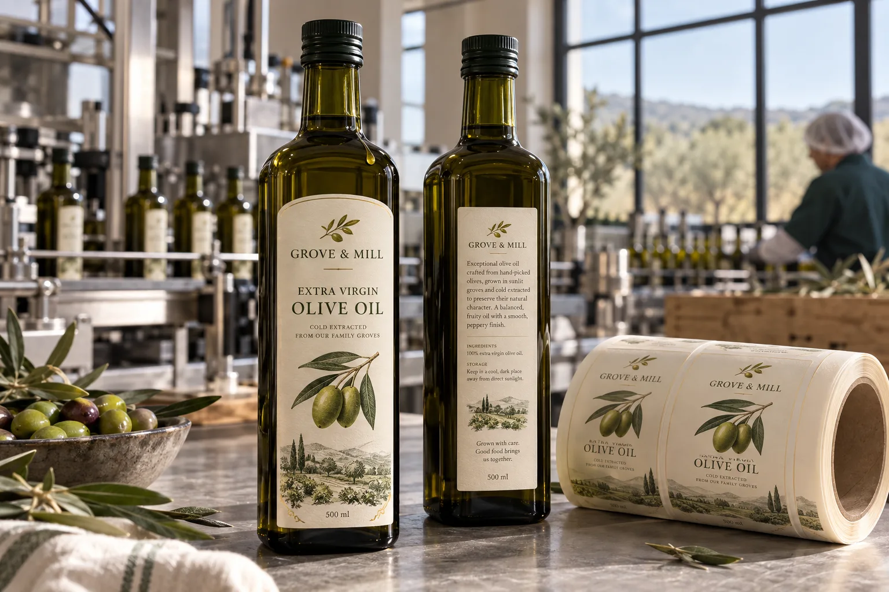

The dripper changes the label brief
When I see an olive oil artwork proof, I ask where the first drip will land. A premium textured paper may look beautiful on a clean mockup, yet a little oil down the shoulder can darken it. The same bottle might be wiped repeatedly in a restaurant kitchen. That does not mean every olive oil label must be plastic; it means the finish needs a test that resembles use.
HERMA's olive-oil label guide discusses oil, dirt and moisture resistance and describes film constructions as one option. Its recommendation is not a pass result for our bottle, ink or finishing process.
Dark glass gives the artwork a second job
Imagine a composite producer using one dark bottle for a mild blend and a peppery single-estate oil. A clear face can show the glass, but small gold letters may disappear against the liquid. I would print both variants at final size, fill the bottles and ask a person unfamiliar with the brand to find the product name and lot code at arm's length.
Another composite bottler changes caps between harvests. The front artwork stays the same, while the lot and harvest fields move to a small back label. I would make sure the back label does not cross the bottle seam or sit beneath a frequently wet pourer. Short-run flexibility is useful only if the code remains legible on a real bottle.
Approve the bottle, not the sample swatch
Trial the chosen paper or film on filled bottles at the intended line speed and application temperature. Check edge lift after case packing, then expose samples to controlled oil drips, wiping and normal shelf light. For a dark bottle, inspect contrast under both bright retail light and a dimmer pantry. Keep any food-contact or migration claim tied to the exact approved construction, not to the appearance of the label.
| Decision | Practical check |
|---|---|
| Glass | Clean, dry application zone and curvature |
| Face and finish | Oil-drip, wipe and scuff response |
| Artwork | Contrast on filled dark glass |
| Variable data | Harvest, lot and barcode readability |
Our buying view
Buy the finish for the use case
I would keep a tactile paper when the controlled test proves it works. If the bottle will live beside a stove and be wiped every day, I would accept a different face or protective finish rather than defend a mockup that only looks good dry.
What to send for a quote
- Filled bottles, cap or pourer, and intended label panel.
- Oil exposure and cleaning expectations.
- Artwork for every variety and variable-code method.
- Quantity, roll direction and application equipment.
Compare oil-resistant sauce labels for another greasy-use case and label lamination choices before locking the finish.
Frequently asked questions
Will a paper label work on olive oil bottles?
It can, but the chosen face and finish need a realistic oil-drip and wipe test on the actual bottle.
Does a dark bottle need a white label?
No. But the product name, variety and variable code need enough contrast when the filled bottle is seen on a shelf.
Should labels be applied to oily glass?
Do not assume an ordinary pressure-sensitive label will bond through oil. Record and control the glass condition at application.
Related buyer guides
Review your label specification
Send package photos, label dimensions, material details, quantity and application conditions. Include good and failed samples where possible so the discussion starts with evidence.